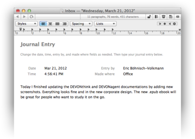

|
|
Write texts and outline projects |
|
With its hierarchical group structure, organization, and navigation functions, as well as its advanced text editing capabilities based on the Mac OS X text engine and the full screen mode DEVONthink Pro Office is perfectly suited for writing text from notes to whole books.  Create new documents with just one click, find related documents, and network them with Wiki-style or static cross-links. Because you are working with databases in DEVONthink Pro Office, you can switch from one document to another with just one click, and manage even large projects with ease. By flagging groups and documents DEVONthink Pro Office can also be used as a simple outliner. Unlike other outliners, DEVONthink Pro Office uses documents as items and groups for items that have sub-items. Use it with the Split view to create an outliner look-and-feel. Possible uses:
Continue to read here: |